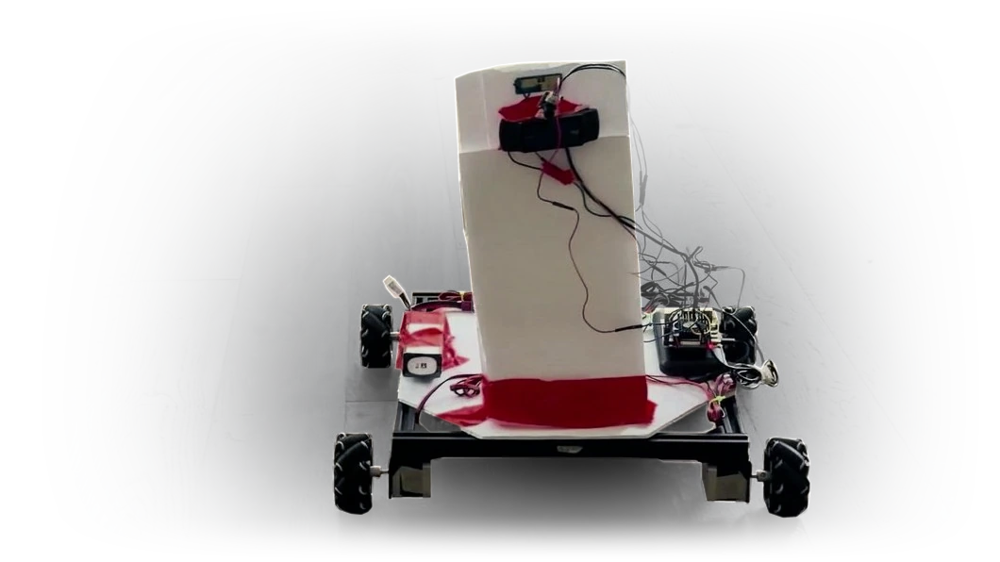
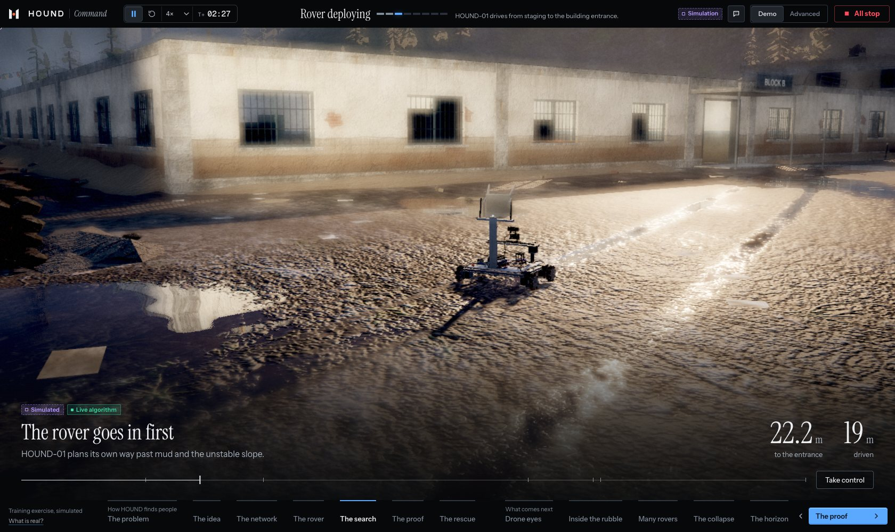
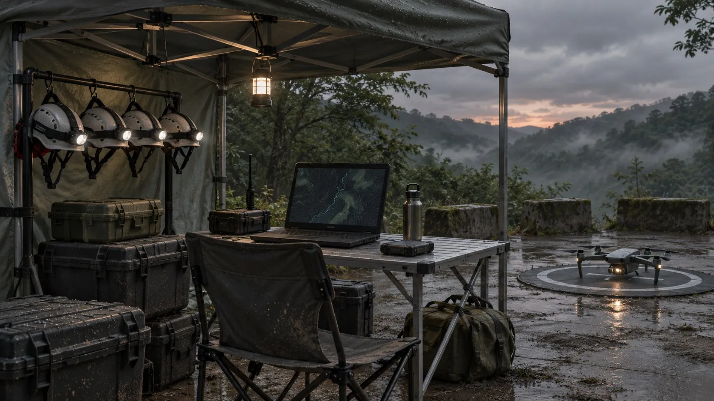

We built a way to find trapped survivors with a Wi-Fi neural network.
HOUND is a low-cost rover that drives into buildings that are not safe for people, stops, and listens through the walls. HOUND Command is the console a rescue team would run it from.
A student project. Every result here comes from simulation.
Is anyone alive in there?
On 26 August 2026 the Bhote Koshi flooded its valley on the border of Nepal and Tibet. By 15 September about 1,399 lives were counted lost, and about 5,130 people were still missing.
Figures: Nepal's disaster authority, as cited in the team's earlier write-up.The walls may not hold for whoever goes in to look.
Radar that senses a person through a wall exists. The units rescue teams use cost thousands of dollars. We wanted to know how much of that job cheap parts and a small neural network could do.
So we send a rover. It stops, goes quiet, and listens.
Wi-Fi passes through the wall. A body on the other side changes how it arrives.
Illustration of a Himalayan valley after a flood. The Bhote Koshi flood of 26 August 2026 was real; the search on this site is a simulated exercise.

It goes where people should not, stops, and listens.
BuiltThe rover exists and drives. This is a 3-D model of it, made part by part.
-
A frame, four motors, four odd wheels
An aluminium extrusion frame on four 80 mm mecanum wheels, each driven by a NEMA 17 stepper. It drives forward, sideways and turns on the spot, which is what a doorway full of debris asks for.
- Drive
- 4 × NEMA 17, DRV8825 drivers
- Power
- 3S 2200 mAh LiPo
-
Wi-Fi that feels a body move
One ESP32-S3 sends 100 Wi-Fi probes a second. A second ESP32-S3 on the rover measures how each one arrives on 51 subcarriers. A person in the room changes that pattern. A neural network on the Raspberry Pi reads ten seconds of it.
- Answer
- Person or no one; still or moving
- Window
- 10 s, rover stopped
-
Radar for where, heat to be sure
An HLK-LD2450 24 GHz radar tracks a moving person: x, y and speed. Two HLK-LD2410C radars give range and look for the slow, repeating motion of breathing. An MLX90640 thermal camera sees body heat once a person is in view. A webcam shows the operator the room.
- Position
- From the radar
- Thermal
- 32 × 24 px, line of sight
-
It stops by itself
A Raspberry Pi 4 runs the sensors and the network. An Arduino UNO R4 runs the motors, and cuts them 400 ms after the Pi goes quiet, so the rover stops by itself when a link drops.
- Exists today
- The rover and its web remote
Made from the CAD and a photograph. The positions of the boards the photograph hides are approximate. Take it apart in the console
The network is running on your computer right now.
Live AIA 1-D convolutional network with 23,372 parameters, written from scratch in NumPy with every gradient derived by hand. The same weights run here in JavaScript. Pick a ten-second Wi-Fi window it has never seen and watch it answer.
Loading the network and 30 test windows (5 MB)
Every window is simulated: a person modelled in Blender, placed behind a wall in a Wi-Fi channel simulator that adds the ESP32's own faults. The timing is measured on this computer.
Its results, on people it never saw
Measured on 955 simulated test windows, split by person: the people in them were never seen in training. The complete table is in the console, under Advanced, Wi-Fi AI, Test set.
How the network was built
Written from scratch
Three convolutions, pooling and two heads, in NumPy: 23,372 parameters. Every gradient was derived by hand and checked against finite differences.
Trained on messy signals
The channel simulator adds the ESP32's own gain jumps, drift, noise, lost packets and timing jitter, and runs a fan in a third of the empty rooms. The network learns from signals with the faults of a cheap radio.
Three sensors, one answer
Wi-Fi reads presence and movement, radar gives the position, and the thermal camera looks for body heat. Every reading moves the odds, and every step is shown.
It listens, moves, and listens again
Three things around the network make it a search tool.
- 1Fuse. The network's answer is combined with radar and thermal by Bayes' rule, one likelihood ratio per reading. One quiet reading moves the odds a little; a room stays open.
- 2Look again. A lead stays open down to 15 %. The rover is sent to a second position for another reading before anyone is told a room is clear.
- 3A person decides. The console plans the route in. It does not move anyone until an operator approves it.
Running the scripted mission to get a worked example
This is the console. The mission below is running, not recorded.
Simulated scenarioLive planner and fusionLive network
A drone maps the block. The rover drives in, stops at four places and listens for ten seconds at each. A fan and a hot pipe are recognised and ruled out. Two people are found inside, one outside. A route is planned around the damage and waits for approval.
The mission starts when this section is on screen.
Findings0
- Nothing found yet.
Rooms8 to search
Mission log
The block of buildings, the people, the damage and the radar, thermal and drone readings are invented for a training exercise placed in Timure, Nepal. The Wi-Fi network, the route planner and the fusion arithmetic run for real, in this page. The console only shows what its sensors found; it is never told where the people are.
Twenty-four workspaces around one mission.
Each one does a single job and carries a label that says how real it is. Every picture is a capture of the running console, taken with Demo mode on.
What is real, and how to check it.
The console uses seven labels: Live AI, Live algorithm, Real data, Built, Your device, Simulated and Concept. Every workspace wears one. Here is what stands behind each one.
The priority order the console suggests is a planning aid, not a medical assessment. The console reports where a person is likely present.
What existed, and what was made for this challenge.
Existed before
- The rover. Frame, mecanum drive, wiring, sensors, the Arduino and ESP32 firmware, the web remote.
- The Wi-Fi neural network. The Blender people, the channel simulator, the training code and the test results. Trained and evaluated on 15 November 2026.
- The project film, 15 November 2026.
- An earlier console and landing page. One flat screen: a satellite map, a route button with approval, sensor panels on simulated readings, and a first version of the network in the browser. Made for another event, EvoHacks 2 (deadline 22 November).

New for the Global AI Builder's Challenge. First commit 23 November 2026.
- HOUND Command, from scratch. A mission simulator, a world model, a hazard-aware route planner and Bayesian fusion, with the network rerun and checked against Python inside it.
- A 3-D operating picture. The site, the rover, the search and the route, drawn live from the simulator's state.
- The workspaces shown above, each with its reality label. A Demo mode and an Advanced mode.
- This page, with the network and the mission running in it.

The mission plays by itself. Then it is yours.
- Team
- Rishith Chennupati and teammates
- Entered in
- Global AI Builder's Challenge, 21 to 28 November 2026
- Best viewed
- On a laptop or desktop, in Chrome, Edge or Safari